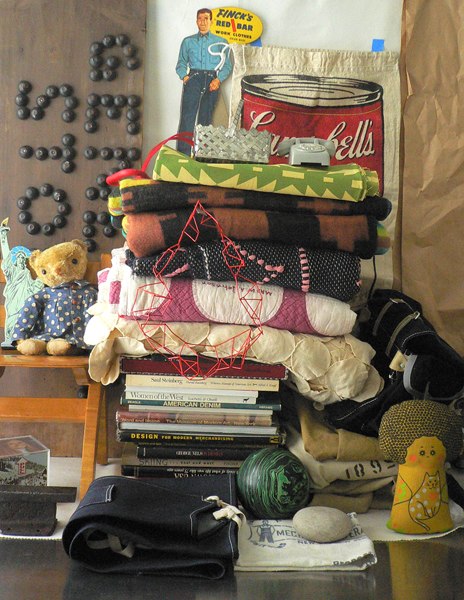
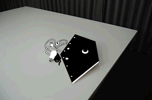
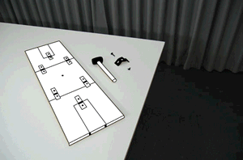
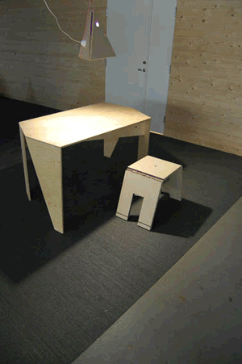

December 12, 2008 by mimecine
 It’s looking like the current Automaker Bailout is not going to make it as the Senate rejected the bill… I’m not the most informed person on the situation but this makes me really mad:
It’s looking like the current Automaker Bailout is not going to make it as the Senate rejected the bill… I’m not the most informed person on the situation but this makes me really mad:
“The Republicans senators emerged from their meeting an hour later having decided they would not agree to a deal. Several blamed the autoworkers union.
“It sounds like the U.A.W. blew it up,” said Senator David Vitter, Republican of Louisiana”
and another tidbit:
“The automakers would also have been required to cut wages and benefits to match the average hourly wage and benefits of Nissan, Toyota and Honda employees in the United States.”
Wow, interesting how the union is getting blamed for the fall out, sounds like another capitalist spin on things. Can you really blame the workers union for not agreeing with the notion of their workers taking on the cuts to support the bailout? How about if for the next two years each white collar worker in the industry takes a big old cut of 30% of their salary and the unionized workers keep their salaries at the same rates for the period, we’d at least see wages coming closer together.
I find this outrageous, just the fact alone the CEO’s first flew in on private jets and then drove to Washington in their hybrids is stupid enough! Jesus, we can’t get our shit together here. We need a workers revolution. Here you can see, it can work, we can come together!
One more thing, Bank of America received $25 billion in bailout money and just announced today they are cutting 35,000 jobs over 3 years “as it digests its acquisition of Merrill Lynch.” Yeah digests the aquisition deal they did with money from our government. Brilliant, get the funds, get even bigger and then dump 35,000 people. What exactly are these companies getting our money for? Each of us needs to start asking. Take time to read the news, business section too!
Image caption:
“During the Great Depression, unemployment was high. Many employers tried to get as much work as possible from their employees for the lowest possible wage. Workers were upset with the speedup of assembly lines, working conditions and the lack of job security. Seeking strength in unity, they formed unions. Automobile workers organized the U.A.W. (United Automobile Workers of America) in 1935. General Motors would not recognize the U.A.W. as the workers’ bargaining representative. Hearing rumors that G.M. was moving work to factories where the union was not as strong, workers in Flint began a sit-down strike on December 30, 1936. The sit-down was an effective way to strike. When workers walked off the job and picketed a plant, management could bring in new workers to break the strike. If the workers stayed in the plant, management could not replace them with other workers. This photograph shows the broken windows at General Motors’ Flint Fisher Body Plant during the Flint sit-down strike of 1936-37.”
In: Economy, politics, Union
- Comments closed
December 4, 2008 by mimecine
Hi there!
Please note! We are open every day until December 24th from 1 – 7! (Sometimes earlier and later too, so just call)
We plan on serving glögg on Saturdays!
Hope to see you at KIOSK!
Happy Holidays! Try to take the time / make the time to enjoy!
- Comments closed
December 3, 2008 by mimecine
Photos tagged kioskkiosk on flickr. Fun collection! We would love to see things from us in their natural environment too, so send us shots / upload on flickr (don’t forget to tag kioskkiosk!) / send us links. info+pics@kioskkiosk.com would be the best. This is really fun! People have taken lots of very nice photos…
- Comments closed
November 29, 2008 by mimecine
Not all images are there yet and we are still editing some texts / measuring the things etc. but the exhibition is *largely* up and is a gorgeous addition to our site. We are potaters, Andy’s things are the meat!
In: America, Mini-Exhibitions, nostalgia, shop
- Comments closed
November 24, 2008 by mimecine


It’s all about having a store. For the last mini-exhibition of 2008 Andy Beach of
REFERENCE LIBRARY will bring his blog into the 3rd dimension with a 10-day-long shop at
KIOSK that appropriately opens on Black Friday, the day after Thanksgiving and the most notorious retailing day of the year. Let the holiday shoppers rejoice! We know we are! In addition to some fifty vintage and non-vintage odds and ends he has selected to sell here, he has commissioned
WORKERS to produce an
APRON (update: it sold out very quickly, sorry) of selvedge denim, made in Japan and offered in a limited edition of 5. Please come to the opening this Friday November
28th from 7 – 10pm at
KIOSK, 95 Spring Street on the 2nd floor where there will be pretzels and beer from Philly. It will be fun to swap Thanksgiving stories and nosh together.
In: America, japan, Mini-Exhibitions, nostalgia
- Comments closed
November 23, 2008 by mimecine
From an interview on NPR…
“I watched prairie dogs every day, rise before the sun, stand with their paws pressed together facing the rising sun in total stillness for up to 30 minutes,” says Williams. “And then I watched them at the end of the day take that same gesture 30 minutes before the sun goes down they would press their palms together in perfect stillness. I don’t mean to anthropomorphize, but when you look at a creature that has survived over the millennium begin and end each day in that kind of stance, it causes one to think about one’s own life and speed and rapidity in which we live.”
- Comments closed
November 15, 2008 by mimecine
Bring prosperity to someone by recycling all the electronics you have lying around tomorrow at Cooper Square (that’s south of 4th ave / St. Marks Place -ish) from 8-2. Not a great location or hours, but I am sight to leave my surplus of old cellphones, cables (it’s a treasure trove of firewire/ethernet/usb-cables) and old non-or-semi-fuctioning wifi-routers that “could come in really handy” some day. Right. They never did. So hopefully someone can make a buck in the recession while I get more space, but most importantly: They don’t get thrown in nature, hopefully. With some unluck and bad business ethics they might first get shipped to china before thrown in nature, but at least there is an effort being made! And, you know what? That would be a problem that is easy to fix with regulation/peer pressure compared to the problem of people not recycling…. Collect your things!
In: Environment, nyc, recycling
- Comments closed
November 13, 2008 by mimecine

Mini #7 will be UGLYCUTE with “Experiments in Dakota Burl” – November 18th – 26th. There is a opening party from 7pm to 10pm on Tuesday the 18th.
Experiments in Dakota Burl? When we sat down and thought about making our own products we first thought about who we would like to work with, then we thought about what we feel the world needs and then we called the Swedish design office UGLYCUTE. We met them in 2003 and have been wanting to work with them ever since. Can you imagine bringing together the humanistic touch with something so contemporary it blows you mind? It’s about opening the door and daring to go through it to begin again rather than peeking in or touching the handle and going home to comfort. Sometimes you have to go against your own beliefs, what is familiar, to find something new. Not because NEW is necessarily a positive but because to continue to look at form and to
re-examine and to create is utterly essential. Humanistic + Intrinsic + Futuristic = UGLYCUTE = LAMP + A STOOL + A TABLE. Each object requires the user to participate and be involved in the creative process of making an object. Each object is made with environmental materials.
These are the first products we are producing under the KIOSK name. They are things we feel are needed in a world loaded with objects. We hope to produce 3 – 4 items a year.
From UGLYCUTE:
“Popular is what most consumers like. They like what they already know and find comfort in – the old. Consumerism becomes synonymous with conformism. Popular rules – the open market is closing its gates to the different. Uglycute reaches into the unrecognizable and unfamiliar in order to treat design as a way to visualize and communicate something new and different. The new is vital since this system is in such a bad need for change to cope with the problems our way of life is confronting. Uglycute believes that new ideas need different visuals to make people understand this important change”
Many thanks to the INTERNATIONAL ARTISTS STUDIO PROGRAM IN SWEDEN:
Without them you would not get to see this here in New York!
In: Furniture, KIOSK, Mini-Exhibitions, Sweden, Uglycute
- Comments closed
November 10, 2008 by mimecine
Mrs Mosquito, why are you still around? It’s November and you should be dead asleep or just plain dead. I wish death upon no-one but you at this point. Please bite our neighbor instead. Bzzz, go away, way, way!
Yes, if you don’t go, I’ll call for Super Timor – the real buzz-kill.
The real sad part is that this all is due to a f**ked up environment. In part probably thanks to said Super Timor…..
In: Environment, Insects, New York
- Comments closed
November 8, 2008 by mimecine
HI there!
We are looking for help at KIOSK during the holiday season. Are you interested in people? Friendly? Smart? Into objects but not a slave to consumption? Tidy and slightly obsessive compulsive? Globally minded? Nice? Then we might have a job here for you! Please drop us a note at info@kioskkiosk.com with your resume or a list of your experience; also your availability. We can use an extra hand from November 17th until December 23rd when we switch to 7 days a week for the busy season. Hours are 11 – 7. Thanks for your consideration!
- Comments closed

{kind=link}
{kind=link}
{kind=link}